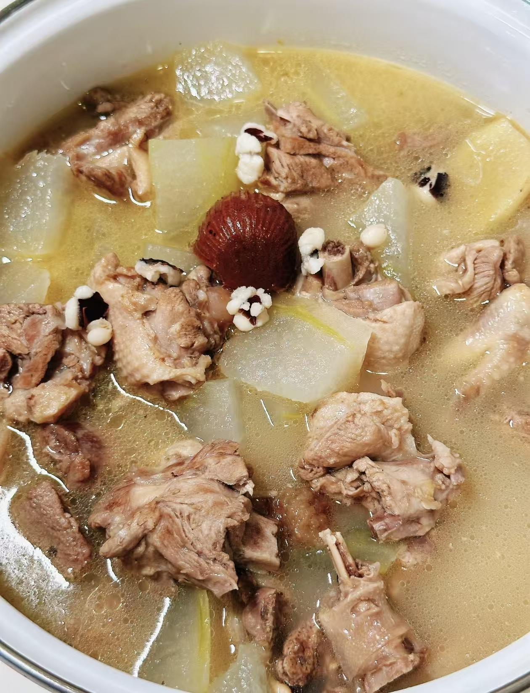

粤式经典靓汤推荐
粤式靓汤以“清、鲜、润、补”为核心，每一款都经过食材精心配伍与火候慢炖，以下是最具代表性的经典汤品：

冬瓜薏米老鸭汤（夏季清热款）
食材：老鸭半只、冬瓜500g、薏米50g、陈皮1片、姜片3片、清水2L
特点：汤色清亮，鸭肉鲜嫩不柴，冬瓜绵软入味，兼具清热解暑、祛湿消肿的功效，是广东夏季餐桌上的常客。
烹饪关键：老鸭提前焯水去血沫，薏米提前浸泡30分钟，全程小火慢熬1.5小时，最后10分钟放冬瓜，避免煮烂。

沙参玉竹炖鸡汤（秋季润燥款）
食材：老母鸡半只、沙参20g、玉竹20g、红枣5颗、枸杞10g、姜片2片、清水1.5L
特点：属于粤式“炖汤”，用隔水蒸的方式锁住营养，汤汁浓郁醇厚，鸡肉软烂脱骨，沙参玉竹的清甜中和了肉香，润燥生津，适合秋冬干燥季节。
烹饪关键：食材放入炖盅，加沸水没过食材，隔水大火蒸30分钟后转小火蒸1小时，红枣去核避免燥热。

五指毛桃猪骨汤（四季滋补款）
食材：猪骨500g、五指毛桃100g、山药200g、茯苓30g、姜片3片、清水2L
特点：粤式经典滋补汤，五指毛桃自带椰香，猪骨鲜香浓郁，山药绵软，汤品清甜回甘，有健脾祛湿、益气补虚的功效，全家皆宜。
烹饪关键：猪骨焯水后用温水冲洗，五指毛桃洗净切段，小火慢熬2小时，山药最后30分钟放入，避免炖化。